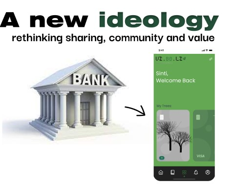

Alternative Presents
linking to my previous interests last semester on blockchain systems, I grew a further interest on environmentally ethical crypto currencies that can be used as alternative crypto and value sharing. Through the sessions in MDEF of Collective Intelligence. I realized that crypto currencies first began as a new paradigm shift in sharing value.
Understanding that most crypto is mined through powerful computers using a lot of energy to run blockchain systems, I kept in mind that it would be more ethical to use concepts such as proof of space “farming” processes rather than proof of work approach used by bitcoin. Proof of work is a form of cryptographic proof in which one party proves to others that a certain amount of a specific computational effort has been expended. Verifiers can subsequently confirm this expenditure with minimal effort on their part. Proof of stake protocols are a class of consensus mechanisms for blockchains that work by selecting validators in proportion to their quantity of holdings in the associated cryptocurrency. This is done to avoid the computational cost of proof of work schemes
Can community and knowledge sharing also form part of this value? I further imagined that VIBOLI, in connection of being a platform to know trees and ecological efforts in a virtual space, can also be a new mechanism of trust and community with people who have the same interests and values. This kind of ideology and community practice has the power to revolutionize how we fund reforestation. To further understand the potentiality of this, I contacted Igor Borboza, who is in the process of applying for funding for a reforestation project in Guanabara bay, Brazil, also interested in funding nurseries, land owners and thai project through NFTs. The seminars on the ideology of Ethereum, helped me question how the futures of crypto currencies could look like as a value system. In most monetary systems, the middle focus is a top down government system of ownership and distribution, such as traditional banks. But how can we take advantage and also question cryptography, a means of sending and receiving information as a self governing encoded way of value sharing? What if planting trees was a means of creating value ?
Creating an Alternative:
The alternative, is that whilst being a library to understand and learn about ecosystems, VIBOLI could extend into a new economy of things, a DAO with these integral values: Moderation Governance Conversation Identity
